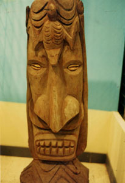

|
第１０ タバコとチェンジ
 その年の１２月に、ニユーギアのマダンに上陸してからも、木下上等兵は三度の食事を作り私の身の回りの世話もしてくれ ていました。マダン軍通信所で勤務中、昭和十八年一月のある朝、木下上等兵は私に朝食を届けに来る途中で血を吐きました。 彼が肺結核だと言う事は、私には全然知らされていませんでした。吐血した彼を見て吃驚した私は早速、花輪支隊本部付の軍医さんに相談に行きました。丁度その時、部下の竹中上等兵も診 療に来ていました。彼は何しに来たのかな？と考えながらそばで立ったまま、彼と軍医さんを黙って見ていました。すると、 彼はヨコネにかかっていたのです。右大腿部のつけねの所が膨れていました。軍医さんは、「少し痛いが我慢せい、お前はい い事をしたのだから」といって、洋カミソリで大退部のヨコネを切開し、黄色い膿を絞りだしました。麻酔薬はつかはない、 麻酔薬はないのです。痛いのに決まっています。軍医さんが洋カミソリでヨコネを切開する時、「お前はいいことをしたんだ から、痛いのは我慢せい」と言った時は、そばで聞いていて痛快でした。軍医さんは、股のつけ根が膨れている所を西洋剃刀 で切り開き膿を絞りだしましたら、黄色い濃がドロドロ出てきて、手術はそれで終り簡単だなあ！と思いました。戦争は異常 な精神作用を起こすらしく、麻酔薬がなくても簡単に直してくれると思いました。そばで切開手術を黙って見ていましたが、 ようやく切開手術も終り、一段落したところで、その軍医さんに 「じつは、私の当番兵が、血を吐いたので、どうしたらいいでしようか？」 と、相談しましたら、軍医さんは『ここマダンには何の設備もない。すぐ後送だ』と言って、パラオ野戦病院に転送の手続き をとって下さいました。当時は、結核に罹ったら直らないものと思われていました。そんな恐ろしい病気だったので、私は内 心、結核に感染したのではないかと心配しました。その後、木下上等兵はパラオからさらに日本に転送されたと聞きました。 彼のその後のことはなんにも分かりません。前に話しましたが、チエンジしたパイナップルを私に持ってきた桜川上等兵はニ ユーギニアのラエから、四千メートルのサラワケットの山を越えてマダンに退却途中に飢餓と病気のため戦病死したという報 告を受けています。 色々の事があって、ニユーギニアの原住民とはタバコとか色々の物と物々交換が出来ると言う事を知りました。この国では お金は通用しません。従って、軍票も通用しなかった。すべては物々交換だけでした。 タバコとか塩は彼等が最も欲しがる貴重品でした。私どもは腹が減ると、バナナとタバコをチエンジして食べたものです。 ある時、土民がバナナを一房持ってきたので、タバコを一箱やりました。その内に補給が厳しくなって来ましたので、１箱の タバコから１本抜き取ってバナナとチエンジしましたがバナナの本数に変わりはありませんでした。昔イソップ物語の中で、 アヒルから卵を毎日１個づつ抜き取っても、アヒルは気が付かなかった、という話を聞いた事がありましたが、ここニユーギ ニアでは本当の話でした。 話は飛んで、頭の回転の早い谷岡上等兵はラバウルに上陸し３日と経たない内に、タバコとパパイヤをチエンジして食べて いる。ところが、夜、寝る前に食べたので翌朝下痢したと、いって嘆いていたことがありました。 日本の村役場の三役にあたるのが、ここニユーギニアではキャプテン、ボスボーイ、スクールボーイという部落の顔役たち であります。役職の彼等でさえもワン、ツウ、スリーまで数えるのがやっとで、スリー以上はプランデー、プランデーと言っ て笑ってごまかします。 話は変って、今度は日本人同志のチエンジ（物々交換）の話です。私がマダンに居た昭和十八年十月頃の事でありますが、 当番兵が面白い話を私にしました。その話とは日本軍が敗退し、ラエから約四千メートルのサラワケット山を越えてマダンに 退却した時のことであります。『ラエを撤収する』と聞いた彼は野戦倉庫に行って、持てるだけのカツオ節を背嚢に詰め込ん だそうです。お米は重いので見向きもしなかった。軽い装備で転進し、退却途中はカツオ節とお米を交換し白い飯を炊いて食 った。重いお米を担ぐよりカツオ節の方が軽い、と言って自慢しました。 また、隊長殿！このウォルサムの懐中時計は転進途中の山の中で、陸軍少佐とカツオ節一本と交換したものですと、いって 立派な懐中時計を見せました。この話を聞いてチョッピリ羨ましかった。実に要領がよく目の付け所がよい男で、生還したら きっと商社の社長になったであろうと思いましたが、惜しいことに「偽パンの実」を食べ、意識が回復せず一週間後に落命し ました。 彼は生前に、「隊長殿、うまいから食べませんか」と、しきりに私に勧めました。その「偽パンの実」を良く見ると、パン の実によく似てはいるが、どこかが違う。彼には悪かったが、『誰も食べたことのない物は食べないよ』と言って断り食べま せんでした。彼は未知に挑戦したが病死した。そんなこともあって、私はニユーギニアでは誰も食べたことのない物は一切口 にしませんでした。 ニユーギニアの植物には恐ろしい毒性のものが多い。この偽パンの実の表面はパイナップルの表面にあるような棘がなかっ た。そこだけが違っていた。ほかは皆同じだった。 これを食べると苦痛はないようだが、神経が麻痺してしまって眠り続け、用便は垂れ流しで一週間位で落命する。これを悪用 したら恐ろしい事が起きると考えゾーッとした。 |